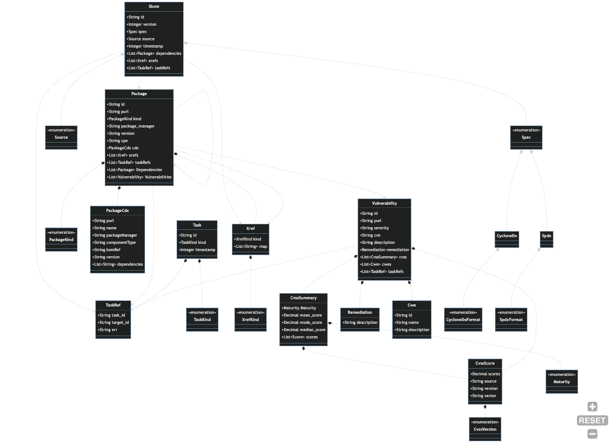

Overview
Harbor is a system for:
- Collecting, categorizing, and storing SBOMs. The process of collecting SBOMs is called ingestion.
- Analyzing SBOMs to identify associated vulnerability and supply chain data. The process of identifying and storing vulnerability and supply chain data associated with SBOMs is called enrichment.
Compliance
Harbor was born out of the Cyber Executive Order which mandates that all federal agencies must procure and catalog SBOMs for all software they purchase or develop. Compliance with the Executive Order is achieved through the ingestion and storage of SBOMs.
Operational Security
While ingestion and storage (I&S) are mandatory first steps, those activities alone do nothing to secure an organization's software supply chain. The Executive Order implies that in addition to collecting and storing SBOMs, they should be analyzed, and the resulting threat intelligence be leveraged by operators responsible for securing systems. Harbor provides operators built-in enrichment providers that generate actionable risk intelligence derived from both free and commercial sources. The community is welcome to use the built-in providers or contribute additional implementations.
Inter-Organization Collaboration
Harbor is being developed by CMS as an open source project so that it can be used by any organization, public or private, to improve their software supply chain security posture and to comply with the Executive Order.
What is an SBOM?
SBOM is an acronym that stands for Software Bill of Materials. One way to think of an SBOM is as a parts list for your car. A car isn't naturally a car. It's a combination of components such as the wheels, chassis, steering-wheel, airbags, etc.
Similarly, in this day and age, most if not all software uses external, often open source,
components written by other, usually unrelated people, teams or companies. So, similar to how a
car is made up of components, a piece of software, or a Package in Harbor terminology, is made
up of other components, and just like a car, a component, might have subcomponents.
When one software component depends on another we typically refer that relationship as a Dependency.
Both components are ultimately a Package, but Harbor uses the terms Primary and Dependency
to provides context about the relationship between two Packages.
Taking all that into context, we can update our definition of an SBOM to the following:
An SBOM is a machine-readable document that:
- Describes a software package
- Provides a unique identifier for the package, similar to a part number in manufacturing
- Provides information about the supplier
- Lists the dependencies that make up the package
Specifications
That expanded definition includes the requirement that an SBOM be defined in a machine-readable format. At this time, there are two dominant SBOM specifications for the format of an SBOM which are:
- CycloneDX backed by the OWASP Foundation.
- SPDX backed by the Linux Foundation.
At this time, Harbor is focused on processing files in the CycloneDX format. This is not an endorsement of one specification over the other, as much as a pragmatic decision based on availability of data. We do have SPDX support in our backlog, and ultimately intend to support both formats. Community PRs welcome!
Example
Here is an example of a very minimal SBOM in CycloneDX JSON format.
{
"$schema": "http://cyclonedx.org/schema/bom-1.4.schema.json",
"bomFormat": "CycloneDX",
"specVersion": "1.4",
"version": 1,
"metadata": {
"timestamp": "2023-06-06T11:29:16Z",
"component": {
"bom-ref": "example-app@1.2.3",
"type": "application",
"name": "project",
"purl": "pkg:nuget/exampl-app@1.2.3"
}
},
"components": [
{
"bom-ref": "example-library@2.3.4",
"type": "library",
"name": "stateless-4.0",
"version": "2.3.1.1",
"purl": "pkg:nuget/example-library@2.3.4"
}
],
"dependencies": [
{
"ref": "example-app@1.2.3",
"dependsOn": [
"example-library@2.3.4"
]
},
{
"ref": "example-library@2.3.4",
"dependsOn": []
}
]
}
How are SBOMs useful?
Sticking with the car analogy, let us consider what happens when a component manufacturer determines that there was a defect in a specific batch of airbags they produced? Typically, they issue a recall. Once the recall is issued, the dealer is notified, and then you, the consumer receive a letter from the dealer telling you bring your car in and have your airbag replaced. This whole system works because the manufacturer and dealer are required by regulation to participate in a data-sharing relationship.
So if car parts are like software packages, wouldn't it be great if there were some sort of data-sharing
relationship that software producers and consumers could participate in? It turns out there is!
It's called National Vulnerability Database or NVD, and it's
maintained by the National Institute of Standards and Technology (NIST).
Security researchers from across both industry and academia submit their findings to the NVD
and updates are published weekly.
How does Harbor fit in?
Unlike automobile manufacturing, software development. maintenance, and procurement is happening in virtually every organization in the industrialized world. The identity and operations locales of the world's automobile manufacturers and parts suppliers is arguably knowable and can be regulated.
Conversely, the number of software systems, developers, consumers, and operators on the planet is a far more challenging catalog to develop and maintain. Even if you could identify all the developers and consumers, the age of cloud computing has made it so that the systems themselves are ephemeral and can come and go many times a day if not minute. This ultimately means that organizations that operate software systems will need to actively maintain an inventory of their own systems and actively opt-in to a vulnerability data-sharing relationship.
Harbor is a system designed to empower you as a system operator to create and maintain an inventory of software components relative to your operations. Once you have established your inventory, you can hook into the different sources of vulnerability data, or enrichment sources, and manage your own recall process when you determine a vulnerability is relevant to your organization.
How does Harbor work?
An SBOM is just a file that is guaranteed to conform to a specification that is designed for machine-readability. As long as the file conforms to the specification, Harbor can parse it once it is received, and identify its dependencies. The primary feature of an SBOM is to provide the list of components that a software package depends on. Harbor either collects or accepts an SBOM and then analyzes it.
Once, the dependencies are identified they can be cross-referenced with the different enrichment sources to identify known vulnerabilities and ideally infer some sort of risk score for the issue. Many times the enrichment sources can even provide remediation advice.
Lifecycle
Specifically, the lifecycle of an SBOM within Harbor consists of four phases:
- Ingestion
- Enrichment
- Continuous Monitoring
- Continuous Enrichment
Ingestion
The ingestion phase is the phase during which Harbor receives an SBOM for a software package being monitored. SBOMs can be ingested in one of three ways:
- Syncing with an external SBOM provider (see
cli/src/commands/sbomandsdk/core/src/services/sboms/snyk). - Manual upload through the UI.
- Automated upload via the API.
During the ingestion phase, SBOMs are parsed, analyzed, and then mapped to the Harbor data model. Once that process is complete the raw SBOM is then stored. In order to maintain the integrity of the system relative to the tampering concern, SBOMs should be treated as immutable once stored. The CMS Harbor instance stores SBOMs in Amazon S3 and leverages features of that platform to ensure immutability. Organizations that wish to run a Harbor instance need to be aware of this concern and develop a tamper-resistance storage strategy appropriate for their environment.
By convention, the Harbor team implements tasks as CLI commands that can be run via an orchestrator. In our case, we deploy Fargate tasks that can be parameterized and invoked. Organizations are free to leverage the business logic found in
sdk/core/src/servicesusing whatever scheduling mechanism is appropriate for their operating environment.
Enrichment
Enrichment is the process by which additional metadata about SBOMs is generated and stored. Examples of enrichment data include:
- Vulnerabilities associated with a package or its dependencies.
- Scores related to vulnerabilities (e.g. EPSS, CVSS) for a package or its dependencies.
- Quality metrics about the SBOM itself (e.g. sbom-scorecard results).
Continuous Monitoring
SBOMs can change over time. In a perfect world, an SBOM for a given tag/version of a component will never change. In reality, teams don't always conform and treat a release tag as immutable. Sometimes, a problematic release is deleted and replaced with an update that reuses the version number. This could happen with code in a repository being directly monitored or in a dependency.
Additionally, sometimes what you want to monitor is one or more branches of a code repository rather than a release tag. This is useful in CI/CD situation where you want to get an early signal that a vulnerable dependency is being added, or when a new vulnerability emerges for an existing dependency.
To support these use cases, the CLI sbom command can be run on a schedule to get an up to date
SBOM for each code repository being monitored. We call this batch sync process continuous monitoring.
Follow the code path starting in cli/commands/sbom for an example of how to implement a
continuous monitoring provider.
The CMS Harbor team uses Fargate Tasks to schedule and run cli commands at predictable intervals based on organizational policies. Organizations that wish to run a Harbor instance will need to determine the appropriate synchronization strategy and tooling for their environment.
From a file storage perspective, operators should be aware that SBOM file names are not guaranteed to be unique at this time. As previously mentioned, the CMS Harbor team leverages S3 for file storage and versioning. Harbor itself ships with a file system storage provider that we use primarily for local development. It should be possible to use this provider to leverage attached storage in a production system, though we haven't fully explored this use case. You may need to modify the source and submit a PR if the current implementation doesn't fully support this approach.
Continuous Enrichment
Vulnerabilities emerge non-deterministically over time. A dependency that did not have any known vulnerabilities yesterday may have one or more today. Similarly, EPSS and CVSS scores may change over time.
To ensure that the latest enrichment data is available, the CLI enrich command can be run
idempotently at scheduled intervals. We call this batch scan process continuous enrichment.
Follow the code path in cli/commands/enrich for examples of how to implement a continuous
enrichment provider.
Does Harbor have a User Interface?
Yes!
The Harbor UI is maintained in a separate repository which can be found here. All contributing guidelines documented here are applicable for that repository as well, and pull requests are welcome!

Use Cases
At this time, Harbor is targeting two primary use cases:
- Ingesting and managing SBOMs provided by SaaS/COTS vendors
- SBOMs related to custom software development initiatives
Current State
After some early experimentation and discovery relative to the CMS operating environment, we determined that the fastest way to create a pipeline that facilitated building out multiple facets of the system was to focus on Snyk as both an SBOM and enrichment provider. Snyk has been widely adopted across development teams at CMS. Once a team has been onboarded to Snyk, it can operate as both an SBOM provider and a source of vulnerability data.
Future State
This isn't the end of the story, however. Not all development teams at CMS use Snyk. Additionally, since Harbor is being built specifically with the goal of being usable by any agency or organization, there is no guarantee that the Snyk integration is an option. Therefore, other SBOM providers (e.g. GitHub) and enrichment sources are being developed. Contributors are encouraged to submit PRs for any custom providers they write and wish to contribute to the community.
Vendor Management
While vendors of SaaS and COTS products are expected to generate their own SBOMs, organizations affected by the Executive Order are still required to collect and store SBOMS they receive from vendors. Harbor provides a way to ingest, enrich, and track vendor supplied SBOMs over time. Our current development relative to vendor supplied SBOMs is focused on enabling users within an organization that receives SBOMs from vendors to upload them via a user interface. User research is underway with vendors to determine what if any automated upload mechanism they would prefer to use.
The scope of the vendor-provided SBOM management feature of Harbor is limited at this time. It may expand as the research continues, but as of now, the MVP as defined in the roadmap section is what is being targeted.
Custom Development
The majority of systems at CMS that require SBOM cataloging and monitoring are custom development projects. Given that, Harbor's roadmap is largely concerned with automatically generating and ingesting SBOMs for these projects. Once ingested, the enrichment engine operates on all SBOMs the same regardless of whether a vendor or a development team was the source.
Data Model
The following diagram provides an integrated overview of the Harbor data model. Data model types
can be found in the sdk/core/src/entities subdirectory and are further segregated by subdomain.
The diagram below shows a high level overview of the entities and their relationships. See
entity specific pages for diagrams and explanations of each subdomain.

SBOMs
The Sbom entity records that an SBOM was ingested or generated for a Package that is being
directly monitored. See the Packages documentation for a
discussion.

Data Dictionary
Sbom- An SBOM is a snapshot manifest of the components that make up a piece of software at a moment in time.Package- An inventory item from anSbom. Can be defined by standard identifiers like CPE or PURL.Vulnerability- An identified security vulnerability related to aPackage.Author- The actor that provided or generated the Sbom. For vendor supplied SBOMS, this will be the vendor name. For SBOMs generated via automation, this will be the name of the SBOM provider that was used to generate the SBOM (e.g. Snyk, Syft).
Packages
Vulnerabilities
Tasks
Organizations
Xrefs
Deployment
All the current features revolve around:
Ingestion
- Collecting and storing SBOM files
- Analyzing SBOM contents
- Translating analysis results to the Harbor data model
- Persisting results to a MongoDB-compliant data store
Enrichment
- Collecting and storing vulnerability data related to SBOMs
- Collecting and storing metadata about vulnerabilities
- Collecting and storing quality metrics related to SBOM contents
Analytics
- Providing programmatic access to the analysis results
To support these use cases, we have designed Harbor with the fundamental expectation that a typical instance is made up of the following resources:
- MongoDB instance
- File/Object storage
- API
- Task Orchestrator

SDK
The Harbor SDK is currently comprised of a docker-compose based development environment, the
platform and core crates, an OpenAPI specification, a custom extension template, and code
generators. Details of the platform and core crates can be found in their respective
subsections, but an overview of the other SDK resources is included below.
Development Environment
A fully functional development environment can be found in the devenv directory. To run the
environment, run docker compose up from that directory.
Custom Extension Template
Operating environments will differ by organization. Harbor cannot anticipate every SBOM ingestion or enrichment source or use case. Likewise, it cannot define a data model that meets the needs of every imaginable scenario or is compatible with all existing and emerging SBOM specifications. What it can and does do is define a core domain model related to the ingestion, storage, enrichment, and analysis of SBOMs, and exposes mechanisms of extension.
The TaskProvider trait found in the core crate is specifically designed to enable
extensibility from the beginning. If the massive success of HashiCorp
Terraform is any indicator, the engineering community prefers
solutions they can extend and customize. Terraform adopts a Provider
model for enabling plugins. This is conceptually, is how we envision building and extending the
upstream Harbor feature set. Contributions to upstream Harbor must conform to this model to be
considered.
Community members that need to build solutions specific to their operating environment or use
case(s) can use the extension-template example project found in the sdk directory to create
a custom CLI that can be invoked by their task orchestrator. It includes an example of how to
leverage functionality exposed by the core crate in your custom Rust code.
Organizations that cannot or do not want to write custom providers in Rust can leverage the OpenAPI specification to write providers in other languages.
OpenAPI
The sdk/openapi directory contains an OpenAPI Specification for
Harbor. It also contains scripts and config that we use to generate our UI
client as well as some tests for the api. The scripts use the OpenAPI Generator
tool and may be useful as a model for organizations that need or want to generate a client for the
Harbor API.
Generators
The sdk/generators directory includes some simple code generation tooling built using
cargo generate. The generators can be
used to generate scaffolding for api endpoints, new cli commands, and task providers. The
generators are not designed to provide complete, robust implementations as much as opinionated
guidance and awareness relative to project structure and conventions.
Platform Crate
The platform crate contains reusable functionality related to completely generic programming
tasks that are not and should not be coupled to the Harbor domain. Externalizing these features to
their own crate is designed to help promote code reuse, simplify dependency management, provide
consistent implementations of common functions, and enforce a strict separation of concerns.
Code in this crate typically falls into one of three categories:
- features that can be mentally modeled as extensions to the Rust standard library
- features that reduce boilerplate
- features that encapsulate infrastructure resources like databases, storage systems, and networks.
Examples of the types code that should belong in this crate include:
- Cryptography
- Encoding
- Networking
- Database access & migrations
- Authorization/Authentication
A Note on Cargo Features
Harbor does not currently implement
cargofeatures, but has been designed in a way that should allow introducing them with minimal refactoring. Keeping this in mind when developing, especially when working with theplatformcrate is an effective mental discipline that can help in designing modules that enforce a strict separation of concerns.
MongoDB
The MongoDB module is an opinionated micro-framework for interacting with the MongoDB backend that Harbor currently supports. This module was developed based on the following needs and desires:
- At the time of initial development there did not seem to be a widely-used or well-maintained Rust-based Object Document Mapper (ODM) available from the ecosystem. Database mapping code is inherently full of boilerplate, which we equate to engineering toil, and can also be a significant source of bugs. While the Rust type system helps with the latter issue to a great degree, we still wanted to leverage generics to generate as much boilerplate code as possible.
- The official Mongo Rust Driver (see below) is a low-level driver designed to allow total control of all aspects of MongoDB interaction. We wanted a way to abstract away that complexity and allow developers to focus on domain logic rather than repeatedly handle infrastructure concerns.
- We wanted database interactions to be consistent and easily refactorable in a handful of places rather than scattered throughout the codebase.
- We needed a way to apply DB Migrations over time.
- We needed a way to dynamically and unpredictably layer in Authz controls. In order to do that we needed to keep authorization concerns/data separate from the entity data itself. Building a micro-framework gave us significant control and flexibility in this regard.
Design
The basic interaction between the types and traits involved in data access are illustrated below. The diagram documents an update sequence.

DocumentDB Compatability
The Harbor team actually uses AWS DocumentDB as its data store. DocumentDB has some lag in terms of MongoDB version support and feature compatability. Review the AWS DocumentDB compatability page for an overview of what versions and features Harbor can support.
Mongo Rust Driver
Harbor leverages the official MongoDB Rust Driver. Review their documentation for a comprehensive overview of how the driver works and how to work with the driver.
One important design consideration to bring attention to is managing instances of the driver
Client. The Mongo Rust Driver is designed in a very specific way in terms of connection
management.
Connections are designed to be long-lived. We learned the hard way that they require a
significant amount of overhead to create, especially when negotiating TLS. The
platform:mongodb::Store struct provides a convention-based way to ensure reuse of Mongo client
instances when possible and appropriate, which so far has been always. Code that makes use of a
Store should wrap that in an Arc and reuse a single instance.
Store
The Store is a facade that provides a coarsely-grained way to perform common operations
against a MongoDB compliant data store. The Store is designed to work generically against any
type that implements the MongoDocument trait. Harbor application code should typically not
reference aStore directly, but instead should call a type that implements the Service trait.
The Store is the type that wraps the long-lived MongoDB client. Because of that, the Store
should also be long-lived. You should wrap the Store in an Arc and clone the Arc whenever
you need to access the Store. There are numerous examples that can be referenced already in
the codebase.
Service
The mongodb::Service trait provides consistent, generic persistence capabilities for types that
implement theMongoDocument trait. It is specialized to the opinionated conventions adopted by the
Harbor Team. It can be thought of as a pre-and-post-processor that ensures mandatory generic logic
is consistently applied across all operations against a Store. Application code should not need
to be aware of the Store and should perform operations against a Service instead.
MongoDocument Trait
The MongoDocument trait must be applied to any entities you wish to persist to MongoDB as the
root document of a collection. The trait provides two capabilities. First, it provides the
Store a way to retrieve the type name of a passed struct dynamically at run time. The type
name is used to resolve the collection the struct belongs to. Second, since Rust traits cannot
contain fields, the trait provides default getter and setter functions for the id field. This
is required, because the Service trait is designed around the convention that all entity keys
are uniformly named.
This implies two things:
- Harbor's MongoDB collections will be named after the struct they contain.
- Entities must have a public
idfield of typeString.
The MongoDocument trait can be applied to any conformant entity by applying the mongo_doc macro
as show here.
#![allow(unused)] fn main() { use platform::persistence::mongodb::mongo_doc; mongo_doc!(Package); }
Migrations
Sometimes, it is necessary to refactor a data model after it has already been released to
production. The migrations module provides a mechanism to either apply and rollback a
migration. This mechanism is limited in its opinions and feature set, since migrations are highly
contextual by their nature. Migration script authors are responsible for ensuring that their
migrations are either idempotent and safe to re-run, or for checking the migration log to
determine if a script has already been applied.
Migration Component Model
A migration script can be defined by implement the Migration trait which specifies the following
interface.
#![allow(unused)] fn main() { pub trait Migration { /// The human readable name of the migration. fn name(&self) -> String; /// The set of operations to apply to a database to migrate it to a desired new state. async fn commit(&self, service: &MigrationService) -> Result<LogEntry, Error>; /// The set of operations to undo a previously committed migration. async fn rollback(&self, service: &MigrationService) -> Result<LogEntry, Error>; } }
A Migration implementation can then be passed to the MigrationService along with an Effect
enum. The Effect enum specifies whether to apply or rollback the migration.
#![allow(unused)] fn main() { impl MigrationService { /// Factory method for creating a new `MigrationService` instance. pub async fn new(ctx: &Context) -> Result<MigrationService, Error> { Ok(MigrationService { ctx: ctx.clone() }) } /// Applies a migration with the specified effect. pub async fn apply( &self, migration: &impl Migration, effect: Effect, ) -> Result<LogEntry, Error> { match effect { Effect::Commit => migration.commit(self).await, Effect::Rollback => migration.rollback(self).await, } } } }
User code is required to coordinate the application of migrations, in which order, and to what effect.
AuthZ
The auth module contains a default authorization model and configuration inspired by the AWS IAM
Policies and Roles model. The following is a brief overview of the model.
Overview
The auth module provides a reusable struct model and Authorizer trait that can be used with any datastore in the case
that you need to role your own RBAC. It is based on the AWS IAM model. The Authorizer trait is decoupled from the
underlying datastore. Consumers of this crate have to implement their own data storage/access strategy. See the
DefaultAuthorizer in the mongo package in this crate for an example.
See the mongodb.auth.init_default_auth module for a re-usable database migration that will initialize
an opinionated authorization configuration.

Core Crate
The core crate contains reusable functionality related to the fundamental Harbor domain. This
crate defines default and mandatory behaviors and enforces all rules related to data integrity.
Community members that are developing their own custom extensions or who wish to contribute to
upstream Harbor are encouraged to review the code in this crate, and take care not to perform data
mutations that are incompatible with upstream Harbor. Community members should likely leverage
the services defined in this crate as-is, or interact with the API.
The two built-in consumers of the core crate are the Enrichment Engine and the API.
Enrichment Engine
The Enrichment Engine is:
- A set of providers that perform tasks that either manage entities (i.e. data) or perform other functions necessary for Harbor to operate.
- The custom logic for a task is contained in a type that implements the
TaskProvidertrait. - The
clibinary is the default mechanism for executing aTaskProvider. TaskProvidertypes call services from thecorecrate to perform persistence operations or domain functions such as uploading an SBOM.- The default functions defined in the
TaskProvidertrait are responsible for reporting task outcome/status, and collecting error information. - The
runfunction in aTaskProvideris responsible for executing task specific logic that usually involves invoking or more services that mutate the data store. - A
Servicewraps a sharedStoreinstance and coordinates entity validation, persistence, and relationships.
The diagram below illustrates this flow of activities.

API
The API is:
- A single binary that configures dependency injection, tracing, and error handling, and then starts an HTTP listener.
- The listener decodes payloads, enforces authz, and routes requests to handlers that are
implemented as
controllers. - A
controllercalls services from thecorecrate to perform persistence operations or other domain functions such as ingesting an SBOM. - A
Servicewraps a sharedStoreinstance and coordinates entity validation, persistence, and relationships.
The diagram below illustrates this flow of activities.

Entities
Entities are types that either define the data elements being observed in the Harbor problem domain, or support interaction across services, both internal and external. Most entities are persisted as entries in a data store. However, some entities are materialized at runtime only for the purpose of executing domain logic, and are never serialized or persisted. Entities are typically managed by one or more services.
Entities may also contain validation or helper functions that can operate on an instance of an entity.
Consider the following. In this example, the Token entity defines a function (expired) that
provides a consistent, functional mechanism for determining if a Token instance has expired.
#![allow(unused)] fn main() { use chrono::{DateTime, Utc}; use serde::{Deserialize, Serialize}; use harbcore::Error; #[derive(Clone, Debug, Deserialize, Serialize)] pub struct Token { pub id: String, pub name: String, pub token: String, pub enabled: bool, pub expires: String, } impl Token { pub fn expired(&self) -> Result<bool, Error> { if self.expires.is_empty() { return Ok(false); } match DateTime::parse_from_rfc3339(&self.expires) { Ok(expiry) => Ok(Utc::now() >= expiry), Err(err) => Err(Error::Runtime(format!("error parsing token expires: {}", err.to_string()))), } } } }
Services
A service in the Harbor component model can be thought of as a set of behaviors (i.e. functions) that relate to a specific part of the problem domain or subsystem. Some services reference others and act as coordinators across multiple areas of the domain. Services typically contain some sort of shared state, whether it be a set of entities or configuration data.
Examples of grouping functionality by service:
- Provide data access for a single entity or a family of entities
- Provide access to an external system
- Translate between external models and internal entities
- Coordinate activities for a task
- Wrap an instance of a resource that is expensive to create so that it can be reused across loop iterations or functional boundaries
Providers
The concept of a provider is fundamental to the design of Harbor. The term provider has become synonymous with the strategy pattern popularized by the Gang of Four in their seminal book Design Patterns: Elements of Reusable Object-Oriented Software. The basic idea behind a provider is that you can define an abstract interface, or trait in Rust terminology, and types that implement that trait can vary in terms of the algorithm they apply internally when called. This is very useful in scenarios where you have a finite set of operations that you want to perform, but you want to be able to swap out the concrete implementation based on some context.
The TaskProvider trait is an example of a provider that you can use. With this trait, Harbor
can be extended with new tasks that fit within the model, and can be swapped based on parameters
or configuration. See the cli crate for more concrete examples.
Tasks
A Task records that an instance of a process was run in a Harbor environment. It may be helpful to
think of a task as unit of work. The enrichment engine is implemented as a set of services that
implement the TaskProvider trait. You can build a service that implements the TaskProvider
trait and unless you override the key default functions, Harbor will record details about each
instantiation of the process by storing an instance of a Task entity.
The TaskProvider trait has the following interface.
#![allow(unused)] fn main() { pub trait TaskProvider: Service<Task> { /// Implement this with your custom logic. async fn run(&self, task: &mut Task) -> Result<HashMap<String, String>, Error>; /// Runs the task and store the results. Usually invoked by a CLI command handler. async fn execute(&self, task: &mut Task) -> Result<(), Error> { // See codebase for default implementation. You should probably not need to override this. } /// Inserts the [Task] record at the start of the task run. async fn init(&self, task: &mut Task) -> Result<(), Error> { // See codebase for default implementation. You should probably not need to override this. } /// Updates the [Task] record at the end of the task run. async fn complete(&self, task: &mut Task) -> Result<(), Error> { // See codebase for default implementation. You should probably not need to override this. } } }
The default implementations of the execute, init, andcomplete functions provide a consistent
way to track and debug Task services. Contributors most likely only need to implement the run
function. This is where task specific logic runs.
Running a TaskProvider should be limited to calling the execute function as illustrated below.
#![allow(unused)] fn main() { let task_provider = TaskProvider {}; task_provider.execute(task); }
Review existing TaskProvider implementations for example of how to implement a TaskProvider.
Vendor Management
- Manual SBOM upload screen (under development)
- Role-based permissions related to SBOM upload screen (under development)
- Vendor SBOM staleness/freshness policy tracking and enforcement (research & development)
- Machine to machine vendor upload mechanism (research)
SBOM generation and synchronization
- Snyk
- GitHub Action (POC)
- GitHub (in progress)
- GitLab
- Bitbucket
- Syft
- Ion Channel
SBOM storage
- S3
- File system
Enrichment
- Snyk
- EPSS
- sbom-scorecard
- Ion Channel
- OSV
Analytics
- Vulnerabilities and scores by SBOM
- Dependency blast radius
- SBOM freshness
- CI/CD & Runtime monitoring
Technical Improvements
- SPDX support
- Pipeline Metrics (e.g. OTEL, Prometheus, Grafana)
- Cargo features
- Notifications
- CI/CD integration
Contributing
Harbor is an Open Source project funded by the [Centers for Medicare and Medicaid Services] (https://www.cms.gov/) as part of their Open Source Strategy. The Harbor team is grateful for their sponsorship and guidance.
Code of Conduct
Harbor generally adopts the Rust Code of Conduct.
Pull Requests
Harbor welcomes PRs from the community! Specific areas we could use community contributions include but are not limited to:
- Test coverage!
- Bug fixes
- New enrichment providers
- Documentation updates and additions
- Additional data storage providers
- Infrastructure-as-Code examples
Design Guidelines
The following sections contain a non-exhaustive list of design guidelines to consider when contributing to Harbor. Suggestions for additional guiding principles welcome!
Repository Organization
root/
api/ # HTTP API
cli/ # Enrichment Engine
extensions/ # Custom logic specific to a Harbor instance
sdk/ # Automation and developer oriented tooling
core/ # Component Model and Domain Logic
platform/ # Infrastructure and generically reusable code
Modules
Subdirectories are the unit of modularization in Rust. They should contain a mod.rs file and this
file should contain exports, unit tests, and types that are shared or fundamental to the module as
a whole.
Examples of fundamental types include:
- Enums
- Traits
- Errors
Platform
Code in the platform crate is intended to be entirely generic and unrelated to the Harbor
application. It should be thought of as a separate reusable library that can be leveraged by any
application. When contributing or reviewing new features or modifications to the platformcrate
it is imperative to keep this in mind.
Services
- Services can consume external models or types but should not expose them outside the crate boundary. Make sure your service exposes only Harbor entities outside the crate.
- If a function does not rely on shared state, consider making it a module level function instead. It will likely be easier to test.
- If you need to repeatedly use a type that is expensive to create, such as an TLS-enabled HTTP Client or a DB driver that establishes long-lived connections, consider wrapping it in a service.
Task Providers
Some specific things to consider when designing a TaskProvider are:
- What kind of task is it?
- Can one of the existing enumerations be extended or is it an altogether new thing?
- Tasks typically map to a
clicommand. Does the new task naturally fit under an existing command or is a new command needed?
- If you experience and unrecoverable error, make sure to set the error message on the
Taskentity so that theTask.Statusis set tofailed. - Can the task tolerate partial failures?
- If so, add errors to the
Taskentity to debug recoverable errors during a task run. - If not, set the error message on the
Taskentity so that theTask.Statusis set tofailed.
- If so, add errors to the
- Should affected entities maintain a reference to
Taskinstances?- If so, add
task_refsentries to entities affected by a run of aTaskProviderinstance.
- If so, add